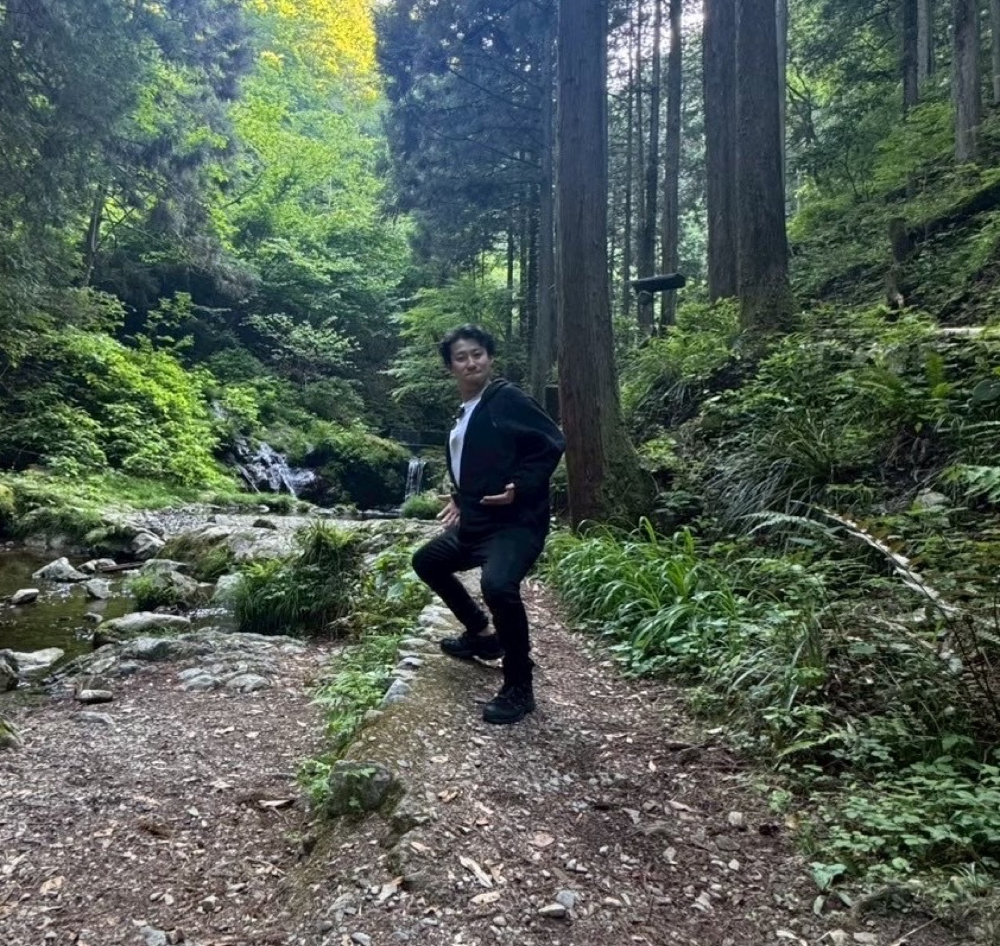

榎本は以前、あるサービスを説明するとき、自動応答やタグ付けの便利さから話していた。何ができるかを、きちんと伝えたかったからだ。
お客様の反応は、悪くないこともあった。「便利そう」と言ってもらえる。ただ、その言葉のあとで会話が止まることがあった。
機能を並べても、導入後の姿は伝わらない
機能並べるだけではこう導入後の成功体験というところが相手に伝わっていないなと痛感した瞬間でございました。
榎本の音声回答より
榎本は、サービスが単なる自動化の道具だと受け取られてしまうことに、難しさを感じていた。設定が大変そう。返信なら手作業でもできている。そうした反応を受けることもあった。
そこで機能をもう一つ説明しても、お客様の疑問には答えられない。お客様が知りたかったのは、導入したあと、自分たちとお客様との関係がどう変わるかだった。
榎本は、できることを並べるだけでは、相手の仕事がどう変わるかが伝わっていなかったとふり返っている。機能の説明だけでは、うまくいったあとの姿が届いていなかった。
お客様が欲しかったのは、「分身」だった
榎本の見方を変えたのは、別のお客様との会話だった。
そのお客様は、事業への思いや自分の経験を学んで、自分の「分身」のようにお客様とやり取りしてくれるなら、いいと話した。その人が思い浮かべていたのは、道具の一覧ではなかった。自分の考えが、自分のお客様に届く場面だった。
榎本の音声回答によると、その商談は導入にもつながった。先の「便利そう」で止まった商談とは、別のお客様だ。
ツールを売るっていうところではなくて、ツールを使うことでのこう世界観実現できる世界観であったりだとか、成功のイメージを売ることが必要だと気づきました。
榎本の音声回答より
どんな機能があるかより、
誰と、
どんな関係を続けたいか。
機能の説明は、最後でいい
白石にも、同じことに気づいた日がある。取材で白石に聞いた話だ。
白石は新卒のころ、NTT上野支店の法人営業部で営業をしていた。当時は、インターネット電話が出始めたころだった。白石はそれを、上野にある中堅のおもちゃメーカーに提案した。その会社は、全国に7つの拠点を持っていた。
当時の電話代は、3分10円。遠距離になると、1分で数十円かかった。それが、拠点あたり月額5万円の定額になる。白石が持っていったのは、そういう提案だった。提案書には、最先端のインターネット電話の機能を一生懸命に書き込んでいた。
話を聞いて大興奮したのは、当時社長室長を務めていた40代の部長だった。それはすごい、と言ってくれたそうだ。
ただ、部長が喜んだのは、機能ではなかった。拠点の電話が定額になれば、電話し放題になる。これまでは電話代を気にして、確認作業がおろそかになることがたまにあった。拠点どうしの意思疎通も、なかなかうまくいかなかった。定額なら、むしろ「電話しないともったいない」と思うようになる。部長は、これが大革命だと話したという。
白石は、そこで「なるほど、そういうことか」と気づいた。商品を提案するとき、機能の説明は最後でいい。最初に伝えるのは、その商品を使う意義のほうだった。
最初に伝えるのは、意義。
機能の説明は、最後。
白石は、本当はこう伝えるべきだったとふり返る。「各拠点の社員が、電話しないともったいないと思うようになったら、コミュニケーションがすごく活発になりますよね。そうしたら、どうなりますか」。導入したあとの世界観を、先に見せるということだ。この気づきは、いまライトアップのサービスを考えるときにも役立っているそうだ。
榎本がお客様から聞いた「分身」も、機能の名前ではなかった。自分の考えが、自分のお客様に届く場面のことだった。榎本はそこから、ツールではなく成功のイメージを売ることが必要だと気づいた。白石が新卒のころ、部長の言葉で気づいたことと同じ順番になっている。
説明の前に、続けたい関係を聞く
まずは機能中心の説明をやめました。
榎本の音声回答より
それから榎本は、説明を始める前に聞くようにした。お客様が、どんな人と出会いたいか。どんな対応を理想にしているか。
サービスの中身は同じでも、見え方が変わった。榎本にとって、自動応答は返信を早くするだけの機能ではなくなった。待たせずに返事をする、おもてなしの一部になる。タグ付けも、お客様を分類して終わるためのものではない。一人ひとりを知るための手がかりになる。
榎本が目指しているのは、「問い合わせ対応が楽になった」で終わらないことだ。導入した会社が、本当に向き合いたいお客様との関係づくりに集中できるようになる。自分のお客様を理解して、伝えることを続けられるようになる。榎本は、そこを最終的に残したい変化だと話している。これは本人が目指している姿で、導入したすべての会社で実現した成果ではない。
相手の課題であったりだとか、理想の未来っていうところに寄り添うパートナーとして話ができるようになると伝えたいと思っています。
榎本の音声回答より
休日は、愛犬と緑の多い公園を歩く
公開済みの本人プロフィールによると、榎本は休日、緑の多い場所へ出かけ、愛犬と公園を歩く。朝の空気の中を歩くと、頭の回り方が変わる気がするそうだ。ゴルフや近所の銭湯も好きだという。

中学から高校までは、野球部にいた。自己紹介には、そのすぐあとに「いずれも弱小チームでした」と自分で書き添えている。
AFTER THE STORY ／ この回のまとめ
機能の前に、
続けたい関係を聞く。
榎本は、機能を並べる説明をやめた。お客様がどんな人と出会いたいか、どんな対応を理想にしているかを先に聞いている。白石が新卒のころに気づいたのも、機能より先に意義を伝えるという同じ順番だった。
本人に追加で聞きたいこと
- 「便利そう」と言われた商談のあと、最初に変えた質問は何か。
- 「分身」という言葉を聞いたとき、どんな反応を返したか。
- 導入後、お客様とどんな変化を確かめられたか。
- 野球部のころの、いちばん楽しかった思い出。
＊